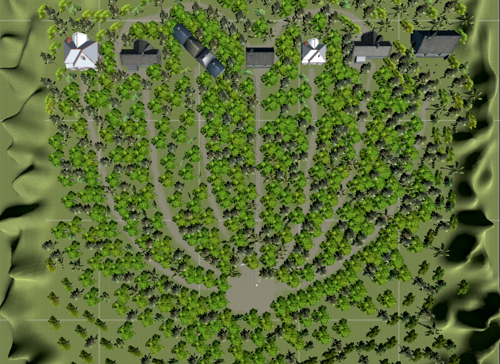

STORYLINE
It's the year 3000
Earth's population: 500,000...
To advance Earth's medicine, scientist began testing on humans. "It's for science" they said.
Regarless of their intention, the result was something out of a nightmare. The DNA of the human test subjects
mutated and they turned into an abomination of nature better known as zombies. They managed to escape and killed
hundred of innocent people. Some didn't die.. If their body was strong enough, they turned into zombies themselves..
Humans found themselves fighting against these zombies in an everyday basis in order to survive.
They can be killed with fire. But there are too many of them and not enough humans left.
A special group called the Guardians was formed and they protect the town. There's not alot of them. With Earth's population
decreasing, the less brave people there are. Could you be a Guardian?
KEYS
- w,a,s,d key to move player
- If a player has a weapon, use f key to shoot the enemies
- i key to read clues found. x key to continue game.
MAP
